Phần này đề cập đến một chủ đề bị bỏ qua trong phần lớn textbook về SQL: parameterized query và bind parameter.
Bind parameter, còn gọi là dynamic parameter hoặc bind variable, là một cách khác để truyền dữ liệu vào database. Thay vì đặt giá trị trực tiếp vào SQL statement, bạn chỉ cần dùng một placeholder như ?, :name hoặc @name rồi cung cấp giá trị thực qua một API call riêng.
Không có gì sai khi viết giá trị trực tiếp vào các ad-hoc statement; tuy nhiên, có hai lý do chính đáng để dùng bind parameter trong program:
Bind variable là cách tốt nhất để ngăn SQL injection.¹
¹ http://en.wikipedia.org/wiki/SQL_injection
Database có execution plan cache như SQL Server và Oracle database có thể tái sử dụng execution plan khi thực thi cùng một statement nhiều lần. Cách này tiết kiệm công sức xây dựng lại execution plan, nhưng chỉ hoạt động khi SQL statement hoàn toàn giống nhau. Nếu đặt các giá trị khác nhau vào SQL statement, database sẽ xử lý nó như một statement khác và tạo lại execution plan.
Khi dùng bind parameter, bạn không viết giá trị thực mà thay vào đó chèn placeholder vào SQL statement. Nhờ vậy, statement không thay đổi khi được thực thi với các giá trị khác nhau.
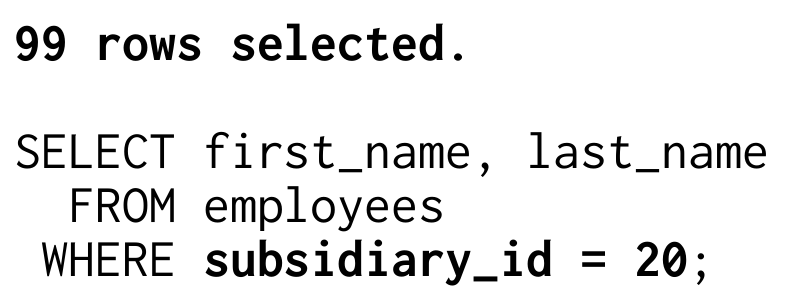
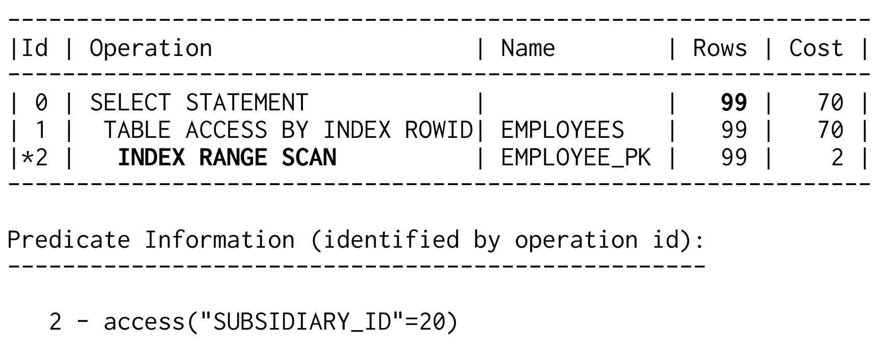
Index lookup cho performance tốt nhất với các subsidiary nhỏ, nhưng TABLE ACCESS FULL có thể nhanh hơn index với các subsidiary lớn:
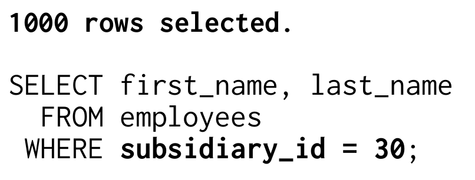
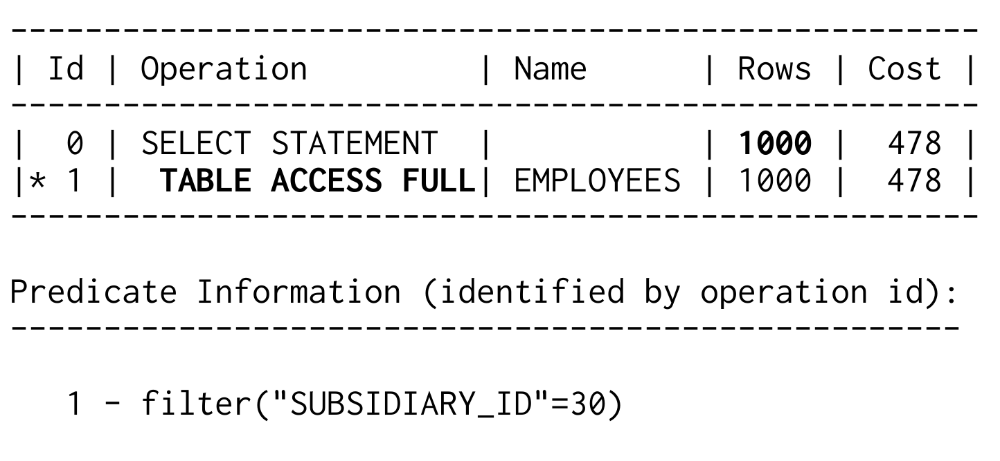
Trong trường hợp này, histogram trên SUBSIDIARY_ID phát huy đúng mục đích. Optimizer dùng nó để xác định frequency của subsidiary ID được nhắc đến trong SQL query. Vì vậy, nó nhận được hai row count estimate khác nhau cho hai query.
Do đó, bước tính cost tiếp theo sẽ cho ra hai cost value khác nhau. Khi optimizer cuối cùng chọn execution plan, nó chọn plan có cost value thấp nhất. Với subsidiary nhỏ hơn, đó là plan dùng index.
Cost của operation TABLE ACCESS BY INDEX ROWID rất nhạy với row count estimate. Chọn số row nhiều gấp mười lần sẽ làm cost value tăng theo hệ số đó. Khi ấy overall cost dùng index còn cao hơn full table scan. Vì vậy, optimizer sẽ chọn execution plan còn lại cho subsidiary lớn hơn.
Khi dùng bind parameter, optimizer không có giá trị cụ thể để xác định frequency của chúng. Nó chỉ giả định phân phối đồng đều và luôn nhận được cùng row count estimate và cost value. Cuối cùng, nó sẽ luôn chọn cùng một execution plan.
Nếu so optimizer với compiler, bind variable giống như program variable, còn khi viết giá trị trực tiếp vào statement thì chúng giống constant hơn. Database có thể dùng các giá trị từ SQL statement trong lúc optimization, cũng như compiler có thể evaluate constant expression trong lúc compilation. Nói ngắn gọn, bind parameter không visible với optimizer, giống như runtime value của variable không được compiler biết đến.
Từ góc nhìn này, có một nghịch lý nhỏ: bind parameter có thể cải thiện performance nếu không dùng bind parameter cho phép optimizer luôn chọn execution plan tốt nhất. Nhưng cái giá là gì? Việc generate và evaluate mọi execution plan variant là một effort rất lớn, không đáng nếu cuối cùng bạn vẫn nhận cùng một kết quả.
Quyết định xây dựng specialized execution plan hay generic execution plan đặt database trước một dilemma. Hoặc database bỏ effort để evaluate mọi plan variant có thể có ở mỗi lần execution nhằm luôn có execution plan tốt nhất, hoặc tiết kiệm optimization overhead và dùng cached execution plan bất cứ khi nào có thể, chấp nhận rủi ro dùng execution plan suboptimal. Vấn đề là database không biết full optimization cycle có tạo ra một execution plan khác hay không nếu chưa thực sự thực hiện full optimization. Database vendor cố giải quyết dilemma này bằng các heuristic method, nhưng thành công rất hạn chế.
Ở vai trò developer, bạn có thể chủ động dùng bind parameter để giúp giải quyết dilemma này. Cụ thể, bạn nên luôn dùng bind parameter, ngoại trừ những giá trị cần ảnh hưởng đến execution plan.
Status code phân phối không đồng đều như “todo” và “done” là một ví dụ tốt. Số entry “done” thường nhiều hơn record “todo” cả một order of magnitude. Trong trường hợp đó, dùng index chỉ có ý nghĩa khi tìm entry “todo”. Partitioning là một ví dụ khác, tức là chia table và index trên nhiều storage area. Khi đó, giá trị thực có thể ảnh hưởng đến partition nào phải được scan. Performance của LIKE query cũng có thể bị ảnh hưởng bởi bind parameter, như chúng ta sẽ thấy trong phần tiếp theo.
Các đoạn code sau minh họa cách dùng bind parameter trong nhiều programming language khác nhau.
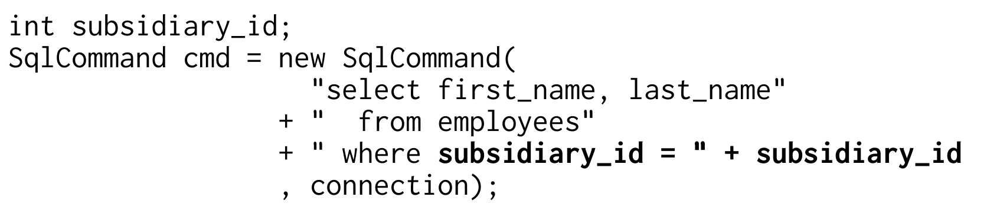
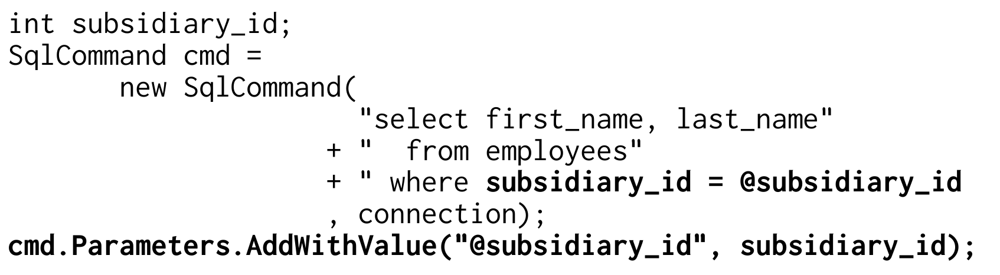
Xem thêm: tài liệu class SqlParameterCollection.
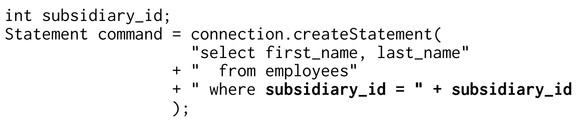
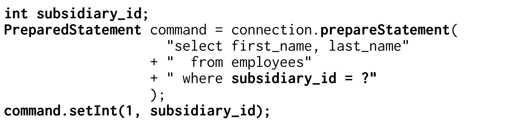
Xem thêm: tài liệu class PreparedStatement.
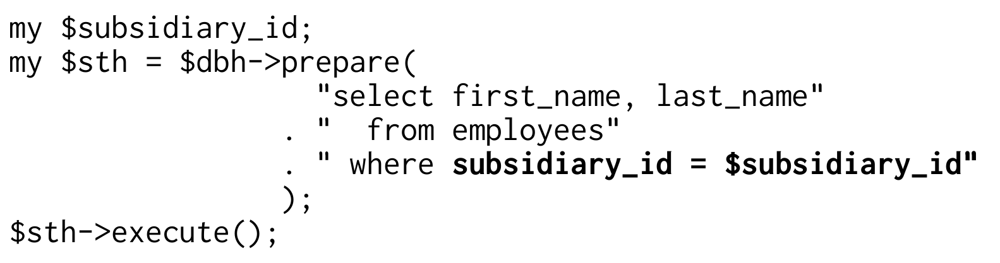
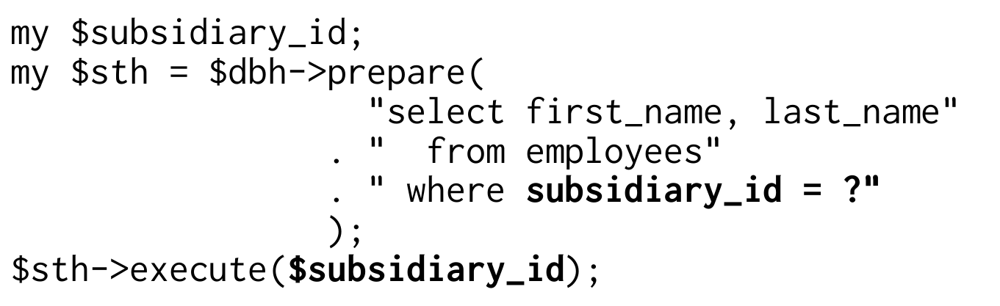
Xem: Programming the Perl DBI.
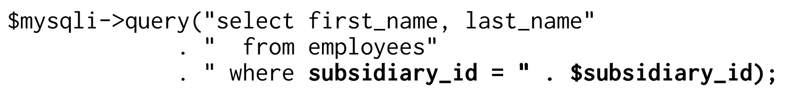
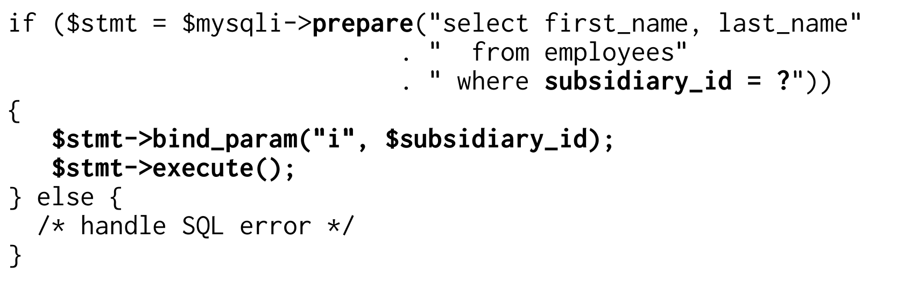
Xem thêm: tài liệu class mysqli_stmt::bind_param và “Prepared statements and stored procedures” trong tài liệu PDO.
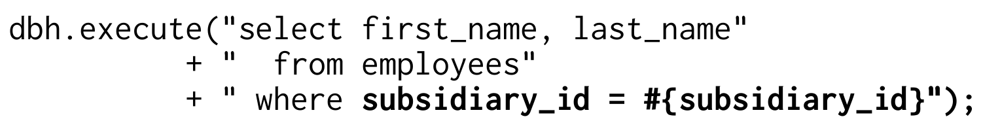
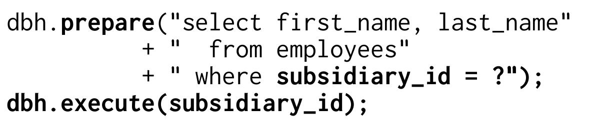
Xem thêm: “Quoting, Placeholders, and Parameter Binding” trong Ruby DBI Tutorial.
Dấu hỏi (?) là placeholder duy nhất được SQL standard định nghĩa. Dấu hỏi là positional parameter. Điều đó nghĩa là các dấu hỏi được đánh số từ trái sang phải. Để bind một giá trị vào một dấu hỏi cụ thể, bạn phải chỉ định số của nó. Tuy nhiên, cách này có thể rất bất tiện vì số thứ tự thay đổi khi thêm hoặc xóa placeholder. Nhiều database cung cấp extension proprietary cho named parameter để giải quyết vấn đề này, chẳng hạn dùng ký hiệu “at” (@name) hoặc dấu hai chấm (:name).
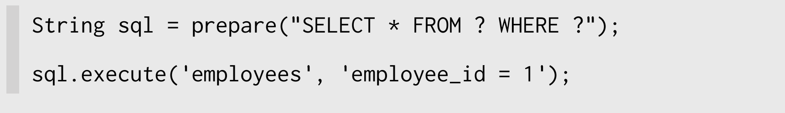
Nếu cần thay đổi structure của SQL statement trong runtime, hãy dùng dynamic SQL.
Optimizer và SQL query càng phức tạp thì việc caching execution plan càng quan trọng. SQL Server và Oracle database có các feature tự động thay literal value trong SQL string bằng bind parameter. Các feature này lần lượt được gọi là CURSOR_SHARING (Oracle) và forced parameterization (SQL Server).
Cả hai feature đều là workaround cho application hoàn toàn không dùng bind parameter. Bật các feature này khiến developer không thể chủ động dùng literal value.
Các inequality operator như <, > và between có thể dùng index giống như equals operator đã giải thích ở trên. Ngay cả LIKE filter cũng có thể, trong một số điều kiện, dùng index như range condition.
Việc dùng các operation này giới hạn lựa chọn về thứ tự column trong multicolumn index. Giới hạn này thậm chí có thể loại bỏ mọi option indexing tối ưu, vì có những query mà bạn đơn giản không thể định nghĩa một thứ tự column “đúng”.
Câu hỏi này dễ trả lời nếu SQL statement nêu rõ start condition và stop condition:
Index trên DATE_OF_BIRTH chỉ được scan trong range đã chỉ định. Scan bắt đầu ở date thứ nhất và kết thúc ở date thứ hai. Chúng ta không thể thu hẹp scanned index range thêm nữa.
Start condition và stop condition khó thấy hơn khi có thêm column thứ hai:
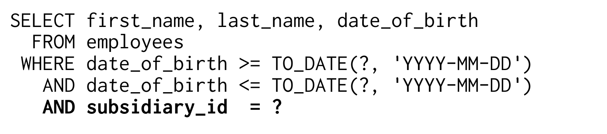
Dĩ nhiên, index lý tưởng phải cover cả hai column, nhưng câu hỏi là thứ tự nào?
Các figure sau cho thấy thứ tự column ảnh hưởng thế nào đến scanned index range. Trong minh họa này, chúng ta tìm tất cả nhân viên của subsidiary 27 sinh trong khoảng từ ngày 1 tháng 1 đến ngày 9 tháng 1 năm 1971.
Hình 2.2 mô tả chi tiết một index trên DATE_OF_BIRTH và SUBSIDIARY_ID, theo đúng thứ tự đó. Database sẽ bắt đầu đi theo leaf node chain ở đâu, hay nói cách khác, tree traversal sẽ kết thúc ở đâu?
Index được sắp xếp theo birth date trước. Chỉ khi hai nhân viên sinh cùng ngày thì SUBSIDIARY_ID mới được dùng để sắp xếp các record đó. Tuy nhiên, query bao phủ một date range. Vì vậy, thứ tự của SUBSIDIARY_ID vô dụng trong tree traversal. Điều này trở nên rõ ràng nếu nhận ra rằng không có entry cho subsidiary 27 trong branch node, dù có entry như vậy trong leaf node. Do đó, filter trên DATE_OF_BIRTH là điều kiện duy nhất giới hạn scanned index range. Scan bắt đầu từ entry đầu tiên khớp date range và kết thúc ở entry cuối cùng, tức toàn bộ năm leaf node được hiển thị trong Hình 2.2.
Hình 2.2. Range Scan trong index DATE_OF_BIRTH, SUBSIDIARY_ID
Bức tranh hoàn toàn khác khi đảo thứ tự column. Hình 2.3 minh họa scan khi index bắt đầu bằng column SUBSIDIARY_ID.
Điểm khác biệt là equals operator giới hạn column index đầu tiên vào một giá trị duy nhất. Trong range của giá trị này (SUBSIDIARY_ID 27), index được sắp xếp theo column thứ hai, tức date of birth, nên không cần đi qua leaf node đầu tiên vì branch node đã cho biết không có employee nào của subsidiary 27 sinh sau ngày 25 tháng 6 năm 1969 trong leaf node đầu tiên.
Hình 2.3. Range Scan trong index SUBSIDIARY_ID, DATE_OF_BIRTH

Tree traversal dẫn trực tiếp đến leaf node thứ hai. Trong trường hợp này, mọi điều kiện của where clause đều giới hạn scanned index range, nên scan kết thúc ngay tại leaf node đó.
Với ví dụ này, chúng ta cũng có thể bác bỏ myth rằng column có selectivity cao nhất phải nằm ở vị trí ngoài cùng bên trái của index. Nếu nhìn vào các figure và chỉ xét selectivity của column đầu tiên, ta thấy cả hai điều kiện đều khớp 13 record. Điều này đúng bất kể filter chỉ theo DATE_OF_BIRTH hay chỉ theo SUBSIDIARY_ID. Selectivity không có ích ở đây, nhưng một thứ tự column vẫn tốt hơn thứ tự còn lại.
Để tối ưu performance, việc biết scanned index range rất quan trọng. Với phần lớn database, bạn thậm chí có thể thấy range này trong execution plan, chỉ cần biết phải tìm gì. Execution plan sau của Oracle database chỉ rõ rằng index EMP_TEST bắt đầu bằng column DATE_OF_BIRTH.
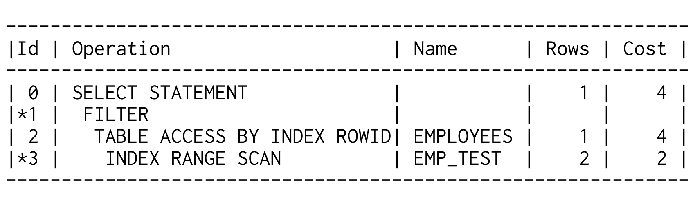
Predicate information của INDEX RANGE SCAN đưa ra manh mối then chốt. Nó xác định các điều kiện của where clause là access predicate hoặc filter predicate. Đây là cách database cho biết nó sử dụng từng điều kiện như thế nào.
Các điều kiện trên column DATE_OF_BIRTH là những điều kiện duy nhất được liệt kê dưới dạng access predicate; chúng giới hạn scanned index range. Vì vậy, DATE_OF_BIRTH là column đầu tiên trong index EMP_TEST. Column SUBSIDIARY_ID chỉ được dùng làm filter.
Database có thể dùng mọi điều kiện làm access predicate nếu chúng ta đảo định nghĩa index:
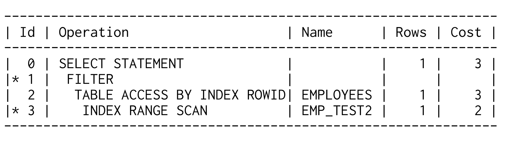
Cuối cùng là between operator. Nó cho phép chỉ định upper bound và lower bound trong một condition duy nhất:
Lưu ý rằng between luôn bao gồm các giá trị được chỉ định, giống như khi dùng operator less than or equal to (<=) và greater than or equal to (>=):
SQL LIKE operator rất thường gây ra behavior performance bất ngờ vì một số search term ngăn database dùng index hiệu quả. Điều đó nghĩa là có search term được index rất tốt, nhưng có search term thì không. Vị trí của wildcard character tạo ra toàn bộ khác biệt.
Ví dụ sau dùng wildcard % ở giữa search term:
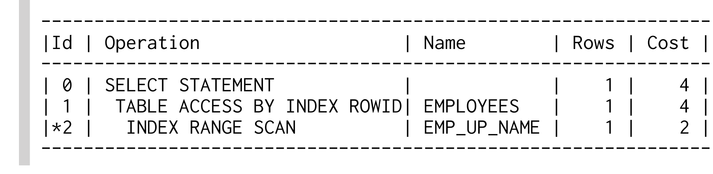
LIKE filter chỉ có thể dùng các character trước wildcard đầu tiên trong lúc tree traversal. Các character còn lại chỉ là filter predicate và không thu hẹp scanned index range. Vì vậy, một LIKE expression có thể chứa hai loại predicate: (1) phần trước wildcard đầu tiên là access predicate; (2) các character còn lại là filter predicate.
Prefix trước wildcard đầu tiên càng selective thì scanned index range càng nhỏ. Đổi lại, index lookup càng nhanh. Hình 2.4 minh họa quan hệ này bằng ba LIKE expression khác nhau. Cả ba đều chọn cùng một row, nhưng scanned index range, và do đó performance, rất khác nhau.
Hình 2.4. Các LIKE search khác nhau

Expression đầu tiên có hai character trước wildcard. Chúng giới hạn scanned index range còn 18 row. Chỉ một row trong số đó khớp toàn bộ LIKE expression, còn 17 row kia được fetch rồi loại bỏ. Expression thứ hai có prefix dài hơn, thu hẹp scanned index range còn hai row. Với expression này, database chỉ đọc thêm một row không liên quan đến kết quả. Expression cuối cùng hoàn toàn không có filter predicate: database chỉ đọc entry khớp toàn bộ LIKE expression.
Trường hợp ngược lại cũng có thể xảy ra: LIKE expression bắt đầu bằng wildcard. LIKE expression như vậy không thể làm access predicate. Database phải scan toàn bộ table nếu không có condition khác cung cấp access predicate.
Vị trí của wildcard character ảnh hưởng đến việc dùng index, ít nhất là trên lý thuyết. Trên thực tế, optimizer tạo generic execution plan khi search term được cung cấp qua bind parameter. Khi đó, optimizer phải đoán liệu phần lớn execution có leading wildcard hay không.
Phần lớn database chỉ giả định rằng không có leading wildcard khi optimize LIKE condition với bind parameter, nhưng giả định này sai nếu LIKE expression được dùng cho full-text search. Đáng tiếc là không có cách trực tiếp để đánh dấu một LIKE condition là full-text search. Box “Labeling Full-Text LIKE Expressions” trình bày một cách thử nhưng không hoạt động. Cách hiển nhiên nhất là chỉ định search term không dùng bind parameter, nhưng điều đó làm tăng optimization overhead và mở ra lỗ hổng SQL injection. Một giải pháp hiệu quả, vẫn secure và portable, là cố ý obfuscate LIKE condition. “Combining Columns” ở trang 70 giải thích chi tiết vấn đề này.
Wildcard được viết trực tiếp vào SQL statement, nhưng chúng ta dùng bind parameter cho search term. Database tự xây dựng LIKE expression cuối cùng bằng string concatenation operator || (Oracle, PostgreSQL). Dù dùng bind parameter, LIKE expression cuối cùng luôn bắt đầu bằng wildcard. Đáng tiếc là database không nhận ra điều đó.
Với PostgreSQL database, vấn đề khác đi vì PostgreSQL giả định có leading wildcard khi dùng bind parameter cho LIKE expression. PostgreSQL đơn giản là không dùng index trong trường hợp đó. Cách duy nhất để có index access cho LIKE expression là làm cho search term thực tế visible với optimizer.
Nếu không dùng bind parameter mà đặt search term trực tiếp vào SQL statement, bạn phải thực hiện các biện pháp phòng ngừa khác để chống SQL injection attack!
Ngay cả khi database optimize execution plan cho leading wildcard, performance vẫn có thể không đủ. Trong trường hợp đó, bạn có thể dùng phần khác của where clause để access dữ liệu hiệu quả, xem thêm “Index Filter Predicates Used Intentionally” ở trang 112. Nếu không có access path nào khác, bạn có thể dùng một trong các full-text index solution proprietary sau.
MySQL cung cấp keyword match và against cho full-text search. Từ MySQL 5.6, bạn cũng có thể tạo full-text index cho table InnoDB; trước đó, việc này chỉ có thể thực hiện với table MyISAM. Xem “Full-Text Search Functions” trong tài liệu MySQL.
Oracle database cung cấp keyword contains. Xem “Oracle Text Application Developer’s Guide”.
PostgreSQL cung cấp operator @@ để triển khai full-text search. Xem “Full Text Search” trong tài liệu PostgreSQL.
² http://www.sai.msu.su/~megera/wiki/wildspeed
Một lựa chọn khác là dùng extension WildSpeed để optimize LIKE expression trực tiếp. Extension này lưu text theo mọi rotation có thể để mỗi character lần lượt nằm ở đầu. Điều đó nghĩa là indexed text không chỉ được lưu một lần mà được lưu nhiều lần bằng số character trong string, nên cần rất nhiều space.
SQL Server cung cấp keyword contains. Xem “Full-Text Search” trong tài liệu SQL Server.
Một trong những câu hỏi phổ biến nhất về indexing là: nên tạo một index cho mỗi column hay một index duy nhất cho tất cả column trong where clause? Trong phần lớn trường hợp, câu trả lời rất đơn giản: một index có nhiều column tốt hơn.
Tuy nhiên, có những query mà một index duy nhất không thể xử lý hoàn hảo, bất kể bạn định nghĩa index thế nào; chẳng hạn query có từ hai range condition độc lập trở lên như ví dụ sau:
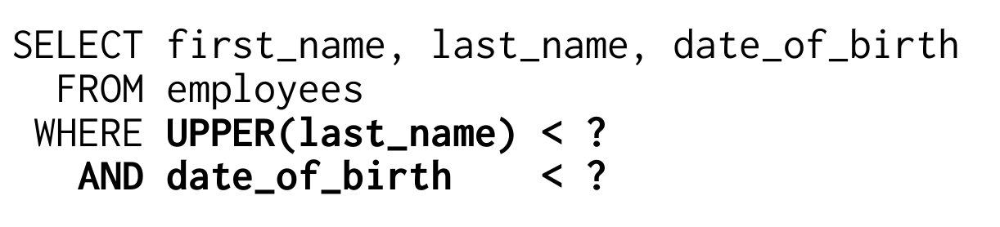
Không thể định nghĩa B-tree index hỗ trợ query này mà không có filter predicate. Để giải thích, chỉ cần nhớ rằng index là một linked list.
Nếu định nghĩa index là UPPER(LAST_NAME), DATE_OF_BIRTH theo thứ tự đó, list sẽ bắt đầu bằng A và kết thúc bằng Z. Date of birth chỉ được xét khi có hai employee cùng tên. Nếu định nghĩa index theo thứ tự ngược lại, nó sẽ bắt đầu bằng employee lớn tuổi nhất và kết thúc bằng employee trẻ tuổi nhất. Khi đó, name chỉ có ảnh hưởng nhỏ đến sort order.
Dù xoay chuyển định nghĩa index thế nào, các entry vẫn luôn được sắp xếp dọc theo một chain. Một đầu chứa entry nhỏ và đầu kia chứa entry lớn. Vì vậy, index chỉ có thể hỗ trợ một range condition dưới dạng access predicate. Để hỗ trợ hai range condition độc lập cần có trục thứ hai, chẳng hạn như bàn cờ. Query ở trên khi đó sẽ khớp tất cả entry từ một góc của bàn cờ, nhưng index không giống bàn cờ mà giống một chain. Nó không có góc.
Dĩ nhiên, bạn vẫn có thể chấp nhận filter predicate và dùng multicolumn index. Trong nhiều trường hợp, đó vẫn là giải pháp tốt nhất. Khi đó, định nghĩa index nên đặt column selective hơn lên trước để column này có thể được dùng làm access predicate. Đây có thể là nguồn gốc của myth “most selective first”, nhưng quy tắc này chỉ đúng khi bạn không thể tránh filter predicate.
Lựa chọn còn lại là dùng hai index riêng, mỗi index cho một column. Khi đó database trước tiên phải scan cả hai index rồi kết hợp kết quả.
Database dùng hai phương pháp để kết hợp index. Thứ nhất là index join. Chương 4, “The Join Operation”, giải thích chi tiết các related algorithm. Cách thứ hai sử dụng functionality từ thế giới data warehouse.
Data warehouse là mẹ của mọi ad-hoc query. Nó chỉ cần vài cú click để kết hợp các condition tùy ý thành query bạn muốn. Không thể dự đoán những tổ hợp column nào có thể xuất hiện trong where clause, khiến việc indexing như đã giải thích từ đầu gần như không thể.
Data warehouse dùng một loại index chuyên dụng để giải quyết vấn đề đó: bitmap index. Ưu điểm của bitmap index là chúng có thể được kết hợp khá dễ dàng. Vì vậy, bạn có performance khá tốt khi index từng column riêng lẻ. Ngược lại, nếu biết query từ trước để tạo một tailored multicolumn B-tree index, index đó vẫn nhanh hơn việc kết hợp nhiều bitmap index.
Điểm yếu lớn nhất của bitmap index là khả năng scale rất tệ với insert, update và delete. Concurrent write operation gần như không thể thực hiện. Điều đó không thành vấn đề trong data warehouse vì các load process được schedule lần lượt. Trong online application, bitmap index phần lớn là vô dụng.
Nhiều database product cung cấp giải pháp hybrid giữa B-tree và bitmap index. Khi không có access path tốt hơn, chúng chuyển kết quả của một số B-tree scan thành bitmap structure trong memory. Các structure này có thể được kết hợp hiệu quả. Bitmap structure không được lưu persistent mà bị loại bỏ sau khi statement thực thi, qua đó tránh vấn đề write scalability kém. Nhược điểm là cần nhiều memory và CPU time. Xét cho cùng, phương pháp này là một hành động tuyệt vọng của optimizer.
Cho đến đây, chúng ta chỉ bàn về những column được thêm vào index. Với partial index (PostgreSQL) hoặc filtered index (SQL Server), bạn cũng có thể chỉ định những row được index.
Partial index hữu ích cho các where condition thường dùng với constant value, chẳng hạn status code trong ví dụ sau:
Các query như vậy rất phổ biến trong queuing system. Query lấy tất cả message chưa được process của một recipient cụ thể. Message đã được process hiếm khi cần đến. Nếu cần, chúng thường được truy cập bằng một criteria cụ thể hơn như primary key.
Chúng ta có thể optimize query này bằng một two-column index. Chỉ xét query này, thứ tự column không quan trọng vì không có range condition.
Index hoàn thành mục đích, nhưng nó chứa nhiều row không bao giờ được tìm kiếm, cụ thể là tất cả message đã được process. Dù vậy, nhờ logarithmic scalability, index vẫn làm query rất nhanh, dù lãng phí nhiều disk space.
Với partial indexing, bạn có thể giới hạn index để chỉ chứa message chưa được process. Syntax cho việc này đơn giản đến bất ngờ: một where clause.
Index chỉ chứa những row thỏa mãn where clause. Trong trường hợp cụ thể này, chúng ta thậm chí có thể bỏ column PROCESSED vì nó luôn là 'N'. Điều đó có nghĩa index giảm kích thước theo hai chiều: theo chiều dọc vì chứa ít row hơn; theo chiều ngang vì đã bỏ một column.
Vì vậy, index rất nhỏ. Với một queue, điều này thậm chí có thể nghĩa là kích thước index không đổi dù table tăng không giới hạn. Index không chứa mọi message, chỉ chứa message chưa được process.
Where clause của partial index có thể phức tạp tùy ý. Giới hạn căn bản duy nhất liên quan đến function: bạn chỉ có thể dùng deterministic function, giống như ở mọi nơi khác trong index definition. Tuy nhiên, SQL Server có rule hạn chế hơn và không cho phép function cũng như OR operator trong index predicate.
Database có thể dùng partial index bất cứ khi nào where clause xuất hiện trong query.